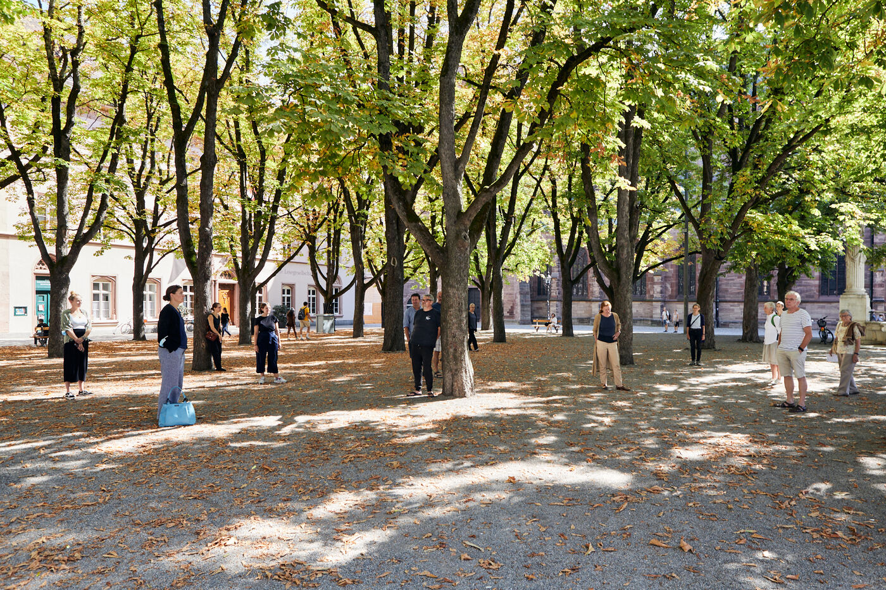
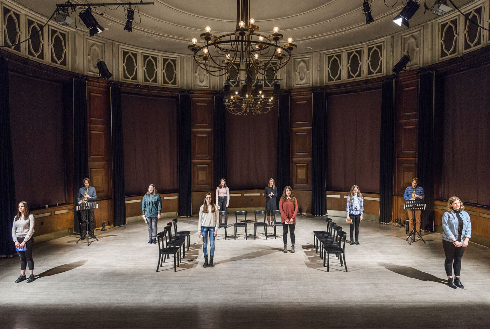
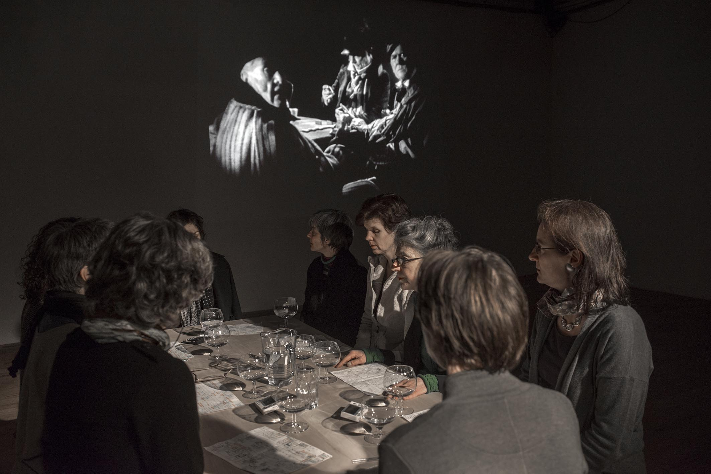

Listening to a voice, one may hear sounds or words. Words are linked to a specific language and understanding. Sounds may hide the voice as a human source. Though sounds are not bound to a specific vocabulary, they are as well carrying meaning, intended or not. Words and sounds constitute the presence of voice and do not exist independently. Both have a specific physicality. They interact, within or outside language. Together they unfold the complexity of singing.
My compositions are rooted in my practise as a singer, vocalist, writer and teacher. Steps throughout these interweaving acitivities were : song - movement - improvisation - sound - breath - word - song - extended. Find a selection of my pieces here:
composer-performer
Marianne Schuppe, voice, lute, e-ponts
for instruments and voices
composition and voice: Marianne Schuppe
9 pieces unfolding a melody line.
Played with long rests in a time span of 7 hours from dusk to late night.
Opaque transparent.
Laconnex series auf bandcamp
for voice and two instruments
text: Marianne Schuppe
a ransong to be sung in trio or performed with solo voice and instruments
for listeners and singers
for voice, lute and uber-bows
text: Marianne Schuppe
came in here from side-doors
found in a landscape of some other game
for voice and one instrument
an ongoing songbook of short melodies performed solo with any instrument or in duo
for voice and one instrument
referring to a small selection of words by Sappho, commissioned by Ute Stoecklin/ maison 44
das Licht zurückwerfen
for voice, lute, e-bows
text: Marianne Schuppe
nor silent, kind or real are things in thinking
for solo voice
where is the stage in a high-ceiled dark concrete-room ?
for voice and instruments
text: abgelauschte Sätze
written for the concert series moments musicaux in Aarau, named after a swedish woolen blanket
for voice, lute, e-bows
longsong in seven parts based on the transkription of a witch trial in the Swiss mountainvalley of Avers in the 17th century,
commissioned by Ina Boesch und Corinne Holtz for the opening of their performance series “Die Bühne im Avers”.
346 Jahre später schickt mir jemand eine Postkarte
music for videowork by Andrea Wolfensberger
Multi-layered-tape-composition based on a conductus of Codex las Huelgas (13th century).
a many-voiced canon towards dissolution into wind
fourteen almost wordless still-lifes for voice
for voice and tape
text: Marianne Schuppe
Simultaneity of speaking and singing comes about by accident
Kunsthaus Aarau
composing for voices
for two voices
With textfragments from les chauses cdla walking in air
entrevoix
for choirs and more voices, 
commissioned by Basel Festival ZeitRäume
a fluid sculpture through the city of Basel formed by smaller and bigger groups of humming voices over a period of ten days
Der Ton, die andern und ich von Isabel Zürcher.
{kind=link}
for 8 voices
text: 23 words from the Bible, translated by every singer in her mothertongue,
commissioned by Basel based ensemble Voce for a programme reflecting Whitsuntide.
photo: Yannick Badier

for 10 voices and two saxophones 
an imaginary journey with music-students of Gymnasium Oberwil reading, singing and dwelling through their favorite books.
{kind=link}
for 2-4 voices
for any number of voices
text: epitaph found on a gravestone in the Strassbourg convent (c.1470-1480).
o mensch zart
bedenck der blumen art
Sotto Voce Vocal Collective
listen on soundcloud
Youtube
for voices
for 8 different-rooted voices
text: weather diaries and logbook-notes from 5 centuries in different languages
commissioned by Schweizer Tonkünstlerverein
eighthour composition for 14 voices
commissioned and performed from 10pm until 6am at Festival Performance Index Basel
a sound-line through the night sustained in changing quartetts under a light bulb
for 12 reading voices in different languages, Sudhaus, Werkraum Warteck Basel.
collective and interdisciplinary works
Marianne Schuppe, voice, text, composition Deborah Walker, cello, composition,
Aus dem Zeltbuch (2022/23) unfolds a surface of word-sound-textures on the edge of acoustic intelligibility. It refers to a few fragments of observations of a post second world war prisoner in the northafrican desert. Fragments of the text were rearranged and translated.
Marianne Schuppe, voice, text
Stefan Thut, cello, pipe, pencil, paper
für Lesende, Zuhörende, Spielende
Komposition: Lukas Huber und Marianne Schuppe
Konzept: Vincent Hofmann und Simon Kindle
Kloster Dornach
Emmanuelle Waeckerlé & Marianne Schuppe, composition and voices
Klangraum Düsseldorf
texts: Emmanuelle Waeckerlé und Marianne Schuppe
on soundcloud
a practise of difference after Luce Irigaray’s book “to be two”
for two voices
text: Marianne Schuppe
developed in and for the duo with Regula Konrad, soprano
for vocal-ensemble, live-music with the film The Fall of the House Usher, Theatergarage Basel and Filmpodium Zürich 
{kind=link}
a project with students of Gymnasium Oberwil and Musikschule Basel in cooperation Sylwia Zytynska and Fritz Hauser, Gare des enfants/Gare du Nord Basel.
text: made up by the students recalling and describing their routes to school and their childrens' bedrooms.
for two voices
text: Dorothea Schürch
developed with and for duo with Dorothea Schürch
commissioned by Schweizer Tonkünstlerverein and performed on the high rack in the sportsground in Festival neue Musik Rümlingen
Invention for Sampling and Speaking Voice
text and recording: Marianne Schuppe, sampling and mastering : Willy Daum
open air performance and commission by Festival Auau Ziegelei Oberwil
kleines Kreisen mittleres Kreisen großes Kreisen
ins inländisch Ausländische hinein
ins ausländisch Inländische hinaus
a performative approach to Franz Schubert’s Winterreise with Dorothea Schürch, Walter Stefan Riedweg and Christoph Schiller, Roxy Birsfelden
Mediathek FHNW
vom Herbeiführen des Affekts zur geeigneten Zeit
chamberopera with Dorothea Schürch (voice), Thomas Eiffler (video), Christoph Schiller (piano)
Werkraum Schlotterbeck
Mediathek FHNW